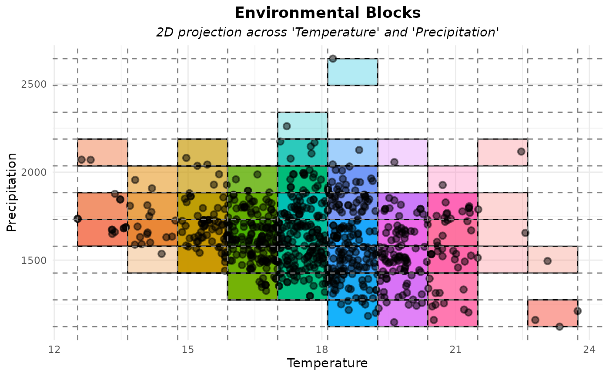

Visualize the output of get_env_bins() by plotting environmental blocks
(bins) along two selected environmental variables. Each block is shown as
a colored rectangle, and points falling inside the same rectangle share the
same block_id.
Usage
plot_env_bins(
env_bins,
x_var,
y_var,
alpha_blocks = 0.3,
color_points = "black",
size_points = 2,
alpha_points = 0.5,
stroke_points = 1,
xlab = NULL,
ylab = NULL,
theme_plot = ggplot2::theme_minimal()
)Arguments
- env_bins
(list) output list from
get_env_bins(). Must contain:data: data.frame with environmental values, bin indices, and block_idbreaks: named list with breakpoints for each variable
- x_var
(character) name of the environmental variable used on the x-axis.
- y_var
(character) name of the environmental variable used on the y-axis.
- alpha_blocks
(numeric) transparency level of the block rectangles. Must be between 0 and 1. Default is 0.3.
- color_points
(character) color of the points representing occurrence records. Default is
"black".- size_points
(numeric) size of the points representing occurrence records. Default is 2.
- alpha_points
(numeric) transparency level of the points. Must be between 0 and 1. Default is 0.5..
- stroke_points
(numeric) size of the border of the points. Default is 1.
- xlab
(character) label for the x-axis. Default is
NULL, meaning the name provided inx_varwill be used.- ylab
(character) label for the y-axis. Default is
NULL, meaning the name provided iny_varwill be used.- theme_plot
(theme) a
ggplot2theme object. Default isggplot2::theme_minimal().
Value
A ggplot object showing the environmental blocks (colored rectangles) and the occurrence records in the selected environmental space.
Examples
# Load example data
data("occurrences", package = "RuHere")
# Get only occurrences from Araucaria
occ <- occurrences[occurrences$species == "Araucaria angustifolia", ]
# Load example of raster variables
data("worldclim", package = "RuHere")
# Unwrap Packed raster
r <- terra::unwrap(worldclim)
# Get bins
b <- get_env_bins(occ = occ, env_layers = r, n_bins = 10)
# Plot
plot_env_bins(b, x_var = "bio_1", y_var = "bio_12",
xlab = "Temperature", ylab = "Precipitation")
#> Warning: Removed 147 rows containing missing values or values outside the scale range
#> (`geom_point()`).
